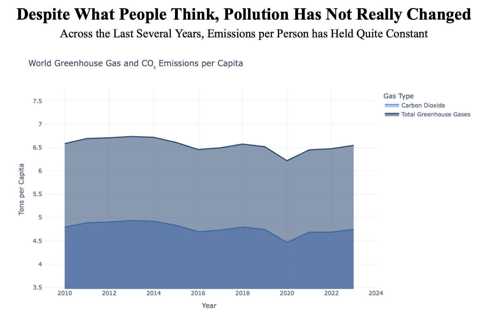

Proposition: Population growth carriers harmful consequences against the environment in terms of global pollution
FOR the Proposition

Design Decisions and Rationale:
- Use of side-by-side line plots with a shared time axis: placing the emissions and population charts next to each other lets viewers instantly compare their upward slopes, making the linkage between more people and more pollution visually obvious.
- Plotting raw totals on an appropriately scaled y-axes: showing total emissions in million tons and total population in millions (with realistic baselines) preserves true magnitude and avoids misleading compression, so the growth really “feels” substantial.
- Placing dots along the lines to match the relative year: including these dots as visual indicators of the year along the line makes it easier for the viewer to compare both vertically and horizontally across different lines so the correlation in growth is more apparent.
AGAINST the Proposition

Design Decisions and Rationale:
- Metric swap to per-capita values: by plotting emissions “per person” instead of total tons, the chart reframes the story to imply individual impact has stayed flat, even though aggregate emissions climbed.
- Elongating the y-axis more than neccessary: exapnding the vertical scale visually flattens the series, making year-to-year changes look negligible and downplaying any real variability.
- Removal of the dots along the lines: by excluding the dots along the line as seen in the first visualization, the line appears to be smoother which makes the overall trend appear to be more constant.
Final Reflection
[WRITE FINAL REFLECTION PARAGRAPHS HERE.]